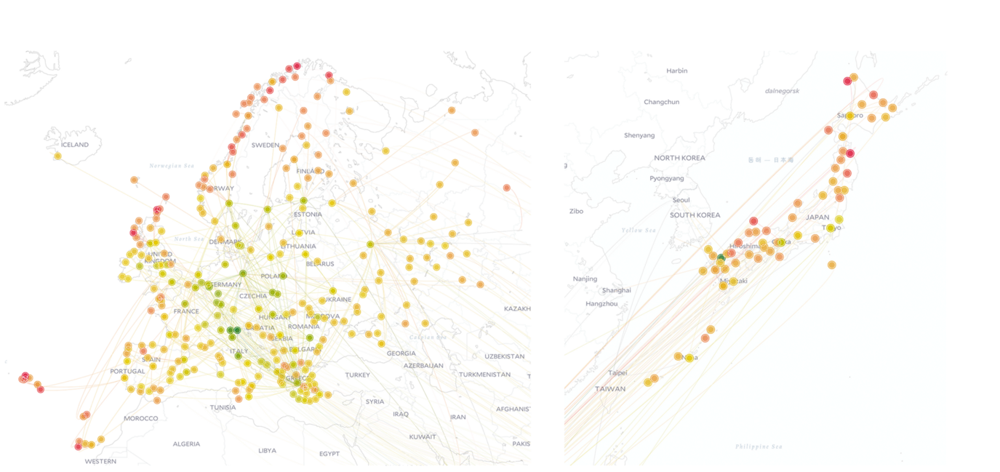
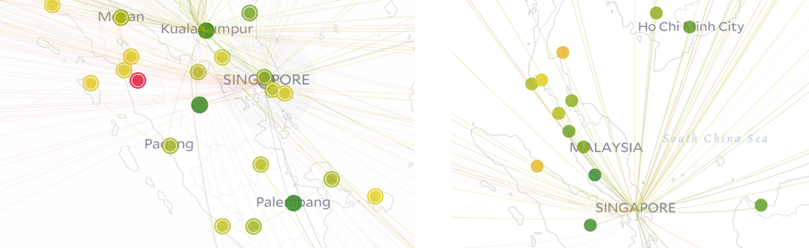
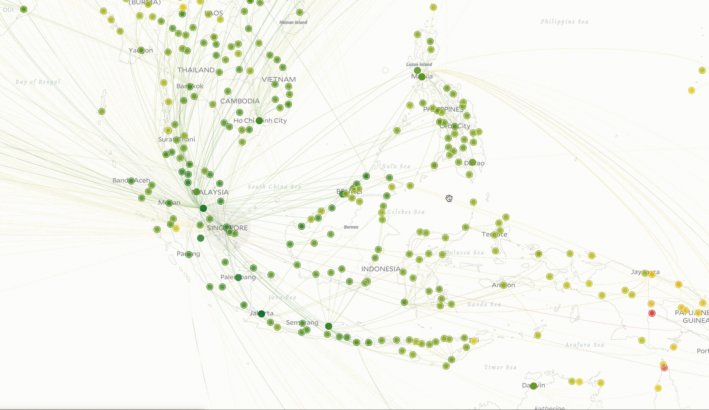
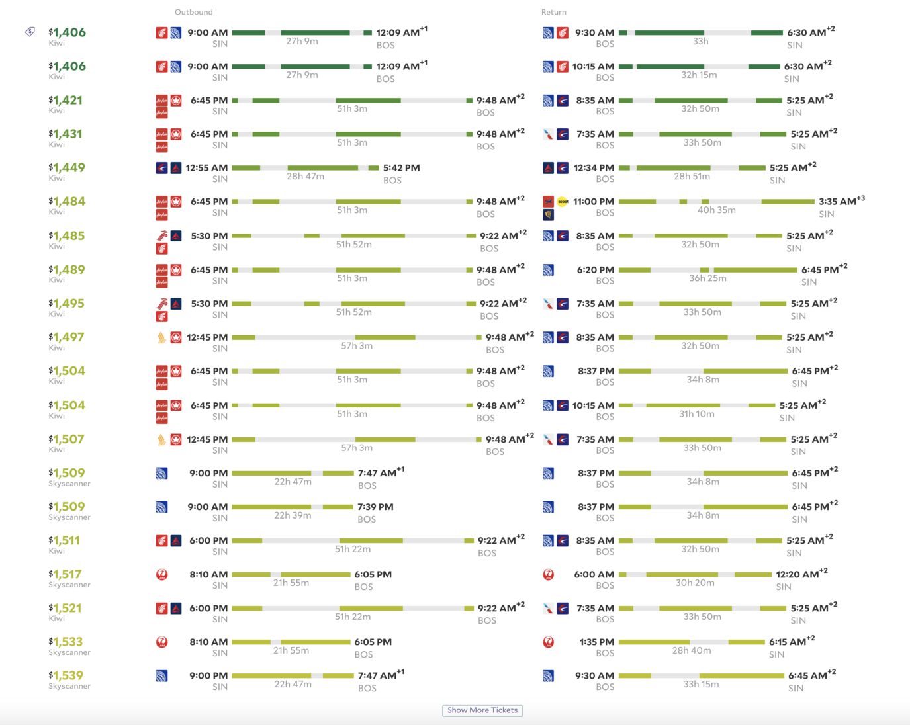
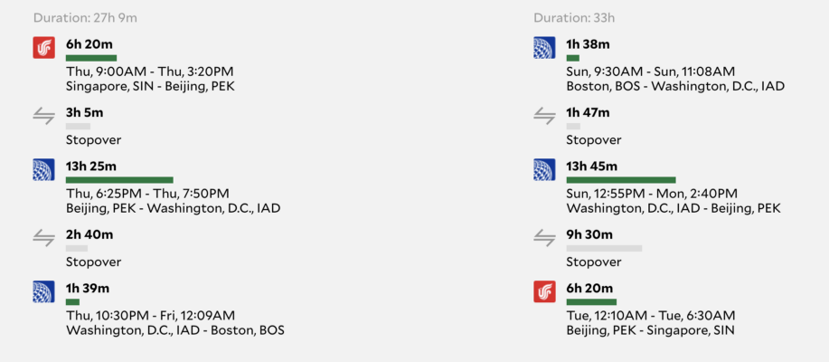

Sometimes you really do need to get away. Escape, part search engine and part research project from students at the MIT Senseable City Laboratory in Singapore, shows you the cheapest flights out of any given city. Just put in a location, and you get color-coded connections to everywhere around the world.
This tool helps you to picture the price landscape whenever you felt like taking a holiday. With so many destinations in South East Asia, a map-based approach that can help in exploring the destinations in a fun and intuitive way. The tools gets live prices of the cheapest return flight to each and every city in the world from where you live. It allows you to filter by visa, weather, price, region, direct/indirect to help you narrow down the options. By clicking on a city you can get the entire list of flights to the city.This started with a simple question: which city is the cheapest. But through user interviews, instead of cheapest, in fact, we are more concerned about affordability, and whether this place is worth my money.
For instance, from Singapore to Kuala Lumpur, I only want to pay up to 80 Singapore dollars (normally less than S$80), but I am willing to pay S$350 to Bali (normally less than S$170). Because I have always wanted to go to the beach in Bali, but I have little interest in Kuala Lumpur. One thing we were pretty sure in the beginning is to plot the prices on the map. It’s not only because this is a travel product, but also because of a design decision in terms of data visualization.The data is retrieved using Skyscanner API and Kiwi API. If you want to know more about them then kindly read their respective documentations.


deck.gl, Mapbox GL

Nowadays, we are used to reviewing items in a list view. We constantly scroll the list to gain more information, because the items that can be displayed on one screen are limited. In this traditional way of reading, we receive information in a predetermined order, from left to right and top to bottom.
However, map visualization is another way to organize information. We simultaneously perceive simple visual symbols in one space and grasp general information more effectively. In Escape, they chose the color-coded circle to present the flight price for the city. It’s a linear scale from green to red. Green represents the cheapest, red represents the most expensive. We assume, in the context of most cultures, green indicates ‘affordable’ and ‘safe to go’, while red implies ‘alert’ or ‘beyond the budget’. But why not size? Why didn’t they use circle radius to represent price? As per them,our perception of size is against our attention to price. While expecting to focus on cheaper cities, nevertheless we naturally pay more attention to the bigger circle and are used to assuming that bigger circle represents a larger number.
Another reason is more practical. The circle can’t be too big because it would cover up everything; It can’t be too small either, because it’d be hardly aware of. However, the global price range could be S$70 to S$9800. In this case, the difference in size is much less noticeable than color.After deciding to use color as the most important visual element, they tried to incorporate the information of the stops.They used the solid circle to represent the non-stop, and a circle with an extra outline to indicate 1 or more than 1 stop.
Once we are interested in a city, we might start asking stops. If we have been told that outbound is 1 stop and return is 2 stops, we would be curious about where the connections are.
They used arcs and pop-ups to indicate connections. However, the stop information is not only spatial but also temporal. Like the subway, the stops are in order. In order to show the order, they used animation where the pop-ups will jump in a given sequence. After visualizing flights on the map, we visualize the tickets. People mainly focus on the comparison of the duration, takeoff and landing time information between tickets.In order to compare these tickets easier, they list the outbound tickets vertically on the left and return on the right. Because we usually compare one way then the other, and unlikely compare both ways at the same time.
They used a time bar to indicate the journey process of every single ticket. The length of the bar represents the duration. The scale of length is based on all the tickets showing on the current page. The colorful bar (price color) represent the time on the flight, while the grey bar means transfer time.
Personally I felt this website was really well made. It is very user friendly and easy to use. The only thing which I can think of which needs improvement is the background of the site. Maybe a black background can make this site look more beautiful but it could compromise with other aspects of the site like clarity of flight paths etc. Although the site might appear to be simple because of the backdrop and other item placements on the site but the developers did a tremendous job of making this site so user friendly. Clarity and easy of use is one of the most important factors in visualizing anything and they did a great job in achieving it.